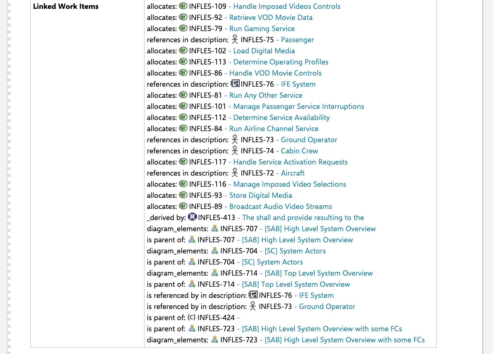
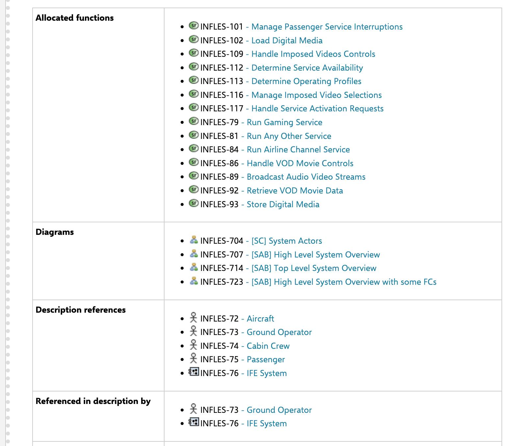

Model synchronization¶
The synchronization of Capella objects as Polarion work items is done by using
the Polarion REST API. We developed a Python client where most of the
endpoints are generated from the open API description. In general, we serialize
all Capella objects fetched from the capellambse.MelodyModel instance
inferred from the capella2polarion config. Then, to reduce the number of
requests, we compare a checksum of the existing work items and the newly
created ones. If the checksum differs, a patch request will happen. If a work
item with a capella_uuid doesn’t exist yet, a new work item will be
created. These custom fields _checksum and _capella_uuid are required.
Per default, capella2polarion will not delete any work items but will set the
status to deleted. However, with the --delete flag, you can enable the
deletion.
Features¶
Supported Capella types¶
Capella2Polarion lets you synchronize the following attributes through the specific serializer alone:
Serializer |
Description |
|---|---|
generic_work_item |
The default serializer for Capella objects w/o a specific serializer. All other serializers are reusing the generic serializer. This serializer populates: type, title, description, status, uuid_capella and requirement_types. The requirement type fields are inferred from the requirement type (this is the custom field name/id) and the value is then the requirement’s text. |
diagram |
A serializer for Capella diagrams. Currently, the
diagram is taken from the diagram_cache, served
from a GitLab artifact URL and attached as SVG and
PNG.
You can provide |
include_pre_and_post_condition |
A serializer adding post- and precondition
fields. Usually used for |
linked_text_as_description |
A serializer resolving |
add_attributes |
A serializer adding arbitrary attributes as custom fields to the work item. For now only supports enum attributes! |
add_context_diagram |
A serializer adding a context diagram to the work
item. This requires node.js to be installed.
The Capella objects where |
add_tree_view |
A serializer adding a tree view diagram to the
work item. Same requirements as for
|
add_jinja_fields |
A serializer that allows custom field values to be filled with rendered Jinja2 template content. This makes it possible to add complex HTML structures like tables or lists to the work item as custom fields. |
jinja_as_description |
A serializer that uses a Jinja2 template to render
the description content of a work item. Similar to
|
Links¶
Attributes on Capella objects referencing other Capella objects are rendered as linked work items if (and only if) the link target exists as a work item in Polarion. This doesn’t need specific configuration in the work item link roles XML. The REST API doesn’t check the link role enumeration at all. Any Capella attribute can be rendered as a link. Any configured link can cause the rendering 2 custom fields:
Grouped linked work items
Grouped backlink work items (on the link target work items)
Grouped linked work items custom fields¶
In a Polarion live-doc, there is no way to filter the linked work items table which is automatically created from Polarion and can be included in the document:
{kind=link}
Therefore, Capella2Polarion creates two custom fields for each link configured. The linked work items are then grouped: A direct field with a list of the links and a field for the reverse links on each target:
{kind=link}
Keep in mind that this requires configuration of new custom fields on the work item type and the targeted work item type in Polarion. See the linked work items configuration documentation page for more details.